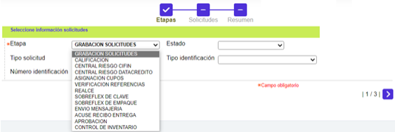
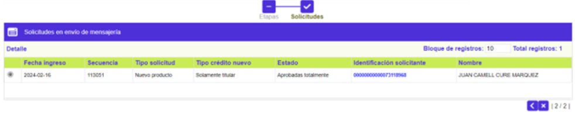

Solicitudes por etapa
Mediante este wizard se ofrece una doble funcionalidad, esto es, para las Etapas de GRABACION SOLICITUDES y APROBACION (si aplica), se permite la gestión de las mismas hasta avanzarlas, mientras que para el resto de Etapas que apliquen para la entidad, solamente se muestran las solicitudes que se encuentran en cada una de ellas, así como ver el Detalle de cada registros y, mediante enlace en el dato del campo Identificación solicitante, ir a conocer los datos del cliente.
El wizard se compone de tres pasos: Etapas, Solicitudes y Resumen.
Etapas

|
Etapa |
Campo que posee lista de valores tipo combo que ilustra los distintos pasos por que pueda pasar una solicitud. |
|
Estado |
Combo opcional desde el cual se podrá seleccionar en qué tipo de Estado se desea filtrar la búsqueda. Las opciones son Nulo, Aprobada totalmente, Aprobada Parcialmente, Zona gris, Negada parcialmente, y Negada totalmente. |
|
Tipo solicitud |
Combo opcional que incluye todos los tipos de solicitudes: Nulo, Variación cupo crédito, Renovación crédito, Reposición crédito, Reexpedición crédito, Reactivación crédito, Línea crédito adicional . |
|
Tipo identificación |
Combo opcional con los tipos de identificación parametrizados en el sistema en la opción Tipos documento identificación y la opción Nulo. |
|
Número identificación |
Este campo opcional acepta cualquier dato alfanumérico de máximo deciseis caracteres. |
Al invocar el botón especial en la parte inferior derecha, el sistema realiza la búsqueda de acuerdo a los campos ingresados en el filtro. De esta forma se desplegará el segundo paso del wizard, que variará dependiendo de qué tipo de etapa fue seleccionada:
Si corresponde a GRABACION SOLICITUDES y APROBACION (si aplica), se muestra

|
Fecha ingreso |
Muestra la fecha en la cual se grabó la solicitud. |
|
Secuencia |
Campo de salida que ilustra el número consecutivo asignado por el sistema y que permite diferenciar e identificar las solicitudes. |
|
Tipo solicitud |
Muestra el tipo de solicitud a tramitar en el formulario. |
|
Tipo crédito nuevo |
Campo de salida que identifica qué tipo de cliente o clientes aplican para la solicitud de Crédito nuevo. Puede ser Titular con adicional, Solo titular, o Solo Adicional. |
|
Estado |
Indica la condición en que se encuentra la solicitud al arribar a esta etapa, las cuales pueden ser: En zona gris, Negada totalmente, Negada parcialmente, Aprobada totalmente o Aprobada parcialmente. |
|
Identificación solicitante Estado |
Contiene tanto el tipo de documento como el número del mismo, que identifica al solicitante. |
|
Nombre |
Despliega el nombre del solicitante. |
|
|
Avanzar todas las solicitudes: Funcionalidad que permite pasar las solicitudes a la siguiente etapa siempre y cuando cumplan con los requisitos necesarios acorde con los parámetros definidos; en caso contrario la solicitud será negada. |
|
Avanzar todas las solicitudes forzadamente: Funcionalidad que permite pasar las solicitudes a la siguiente etapa de manera forzada, es decir, aunque no cumplan los requisitos parametrizados para la etapa actual. |
|
|
Negar todas las solicitudes: Funcionalidad que permite denegar totalmente, de forma manual, todas las solicitudes. |
|
|
|
Avanzar todas las solicitudes masivamente: Funcionalidad que permite avanzar las solicitudes hasta la última etapa que tengan en los Parámetros de solicitudes por producto, validando los requisitos necesarios acorde con los parámetros definidos, y negando a aquellas que no los cumplen |
En ese momento el usuario, utilizando los botones especiales ubicados en la parte inferior izquierda, realizar cualquiera de las siguientes acciones: Avanzar todas las solicitudes, Avanzar todas las solicitudes forzadamente, Negar todas las solicitudes o Avanzar todas las solicitudes masivamente, lo cual dependerá de si el sistema valida condiciones como filtros, autonomía para variar los cupos de los productos, entre otros.
Así mismo, la funcionalidad permite gestionar uno o más registros, que marque el usuario en la columna Seleccionar y luego activar el botón especial correspondiente a avanzar, pasando esos registros a Resumen:
En ese punto, mediante los botones especiales ubicados en la parte inferior izquierda, el sistema permite realizar cualquiera de las siguientes acciones: Avanzar solicitud, Avanzar solicitud forzadamente o Negar solicitud, lo cual dependerá de si el sistema valida condiciones como filtros, autonomía para variar los cupos de los productos, entre otros.
|
Remover |
Las solicitudes que sean seleccionadas con este campo, serán omitidas en las acciones que se tomen en el formulario. |
|
Avanzar solicitud: Permite pasar las solicitudes a la siguiente etapa siempre y cuando cumplan con los requisitos necesarios acorde con los parámetros definidos; en caso contrario la solicitud será negada. |
|
|
Avanzar solicitud forzadamente: Permite pasar las solicitudes a la siguiente etapa de manera forzada, es decir, aunque no cumplan los requisitos parametrizados para la etapa actual. |
|
|
Negar solicitud: Permite denegar totalmente, de forma manual, todas las solicitudes. |
Para los demás tipos solicitudes diferentes a GRABACION SOLICITUDES y APROBACION (si aplica), la funcionalidad del wizard varía de manera dinámica, solo muestra dos pasos, en el segundo de los cuales solamente despliega los datos ya antes ilustrados:
